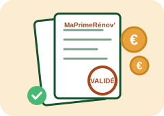
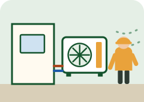
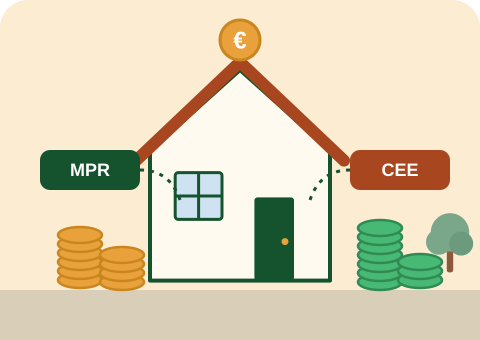
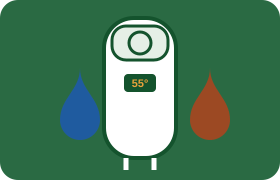
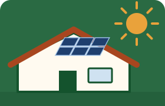
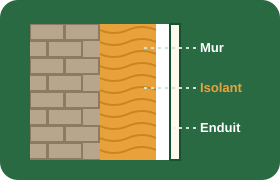
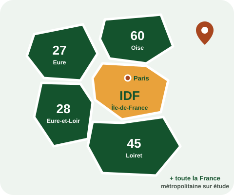

Remplacez votre chaudière par une pompe à chaleur, on s'occupe des aides.
Eco-Roy installe des pompes à chaleur air/eau dans l'Eure, l'Eure-et-Loir, le Loiret, l'Oise et en Île-de-France. Nous montons votre dossier MaPrimeRénov' et CEE, et, en tant que mandataire, nous pouvons avancer les aides pour réduire votre reste à charge dès le devis.
- Simulation gratuite et sans engagement, en moins de 3 minutes
- Un conseiller vous rappelle sous 24 h ouvrées
- Installation en 1 à 2 jours par des techniciens qualifiés
Quatre étapes, un seul interlocuteur
Vous n'avez pas à jongler entre l'installateur, l'Anah et le financeur des primes CEE : nous coordonnons tout.
Simulation d'éligibilité
Vous répondez en ligne à quelques questions sur votre logement et votre foyer. Vous obtenez une estimation de votre profil MaPrimeRénov'.
Visite et étude
Un technicien vient chez vous : surface, isolation, radiateurs, emplacement de l'unité extérieure. Nous dimensionnons la PAC et vous remettons un devis détaillé.

Dossier d'aides géré par nous
Nous préparons avec vous les demandes MaPrimeRénov' et CEE avant le démarrage des travaux. Mandataire, nous pouvons avancer les aides.

Installation en 1 à 2 jours
Dépose de l'ancienne chaudière, pose, mise en service et prise en main. Vous recevez les documents nécessaires au versement des aides.
Deux aides cumulables, expliquées simplement
Pour remplacer une chaudière par une pompe à chaleur air/eau, deux dispositifs publics peuvent s'additionner. Leur montant dépend de vos revenus et de votre situation : la simulation vous donne une première estimation.
Voir le détail des barèmes 2026

MaPrimeRénov'
Aide de l'État versée par l'Anah aux propriétaires (occupants ou bailleurs) d'un logement de plus de 15 ans. Son montant dépend de votre « couleur » de revenus : bleu, jaune, violet ou rose. À titre indicatif pour une PAC air/eau : jusqu'à 5 000 € pour un ménage bleu, 4 000 € jaune, 3 000 € violet ; les ménages roses n'y ont pas droit pour ce seul équipement.
Prime CEE
Les certificats d'économies d'énergie sont financés par les fournisseurs d'énergie. La prime est accessible à tous les ménages, quels que soient leurs revenus, avec des montants plus élevés pour les ménages modestes. Nous travaillons avec un délégataire CEE qui la finance.
Estimations indicatives, sous réserve d'éligibilité et de l'instruction du dossier. Barèmes au 1er janvier 2026, susceptibles d'évoluer. Une solution de financement du reste à charge peut vous être proposée avec notre partenaire Sofinco, sous réserve d'acceptation de votre dossier.
La pompe à chaleur, et ce qui va avec
La PAC air/eau est notre cœur de métier. Selon votre logement, d'autres équipements peuvent être plus adaptés ou la compléter.
Pompe à chaleur air/eau
Chauffage et, selon le modèle, eau chaude sanitaire, sur votre réseau de radiateurs ou plancher chauffant existant. En savoir plus

Ballon thermodynamique
Une solution adaptée aux logements chauffés à l'électricité : il produit l'eau chaude en captant les calories de l'air.

Solaire combiné et photovoltaïque
Système solaire combiné pour le chauffage et l'eau chaude, ou panneaux photovoltaïques pour produire une partie de votre électricité.

Isolation des murs par l'extérieur
Isoler l'enveloppe réduit les besoins de chauffage, ce qui permet souvent une pompe à chaleur moins puissante.
Des garanties vérifiables
Près de chez vous, et partout en France métropolitaine
Nos équipes interviennent en priorité dans quatre départements et en Île-de-France. Pour le reste de la France métropolitaine, contactez-nous : nous étudions chaque projet.

Île-de-France : Paris et les départements 77, 78, 91, 92, 93, 94 et 95.
Ils nous ont confié leur projet
Les avis de nos clients seront bientôt publiés ici, directement depuis notre fiche Google. En attendant, nous pouvons vous mettre en relation avec des clients de votre secteur sur simple demande.
Questions fréquentes
Ma maison est-elle adaptée à une pompe à chaleur air/eau ?
Une PAC air/eau remplace une chaudière et alimente un circuit de chauffage à eau : radiateurs ou plancher chauffant. Si votre logement est chauffé au gaz, au fioul ou au bois avec des radiateurs à eau, c'est en général une bonne candidate. Si vous êtes chauffé avec des radiateurs électriques, il n'y a pas de circuit d'eau : un ballon thermodynamique est souvent plus pertinent. La visite technique permet de le confirmer.
Quel sera mon reste à charge ?
Il dépend du prix de l'installation retenue, de vos revenus, de la composition de votre foyer et de votre lieu de résidence. MaPrimeRénov' et la prime CEE réduisent le reste à charge, mais nous ne promettons jamais un montant garanti avant l'instruction du dossier. Le devis détaille le prix, les aides estimées et ce qu'il vous reste à payer.
Qu'est-ce qu'un mandataire MaPrimeRénov' ?
C'est une entreprise que vous désignez sur votre compte MaPrimeRénov' pour vous accompagner. En tant que mandataire, Eco-Roy peut monter le dossier avec vous et percevoir l'aide à votre place : son montant est alors déduit directement de votre facture, vous n'avez pas à l'avancer.
Combien de temps dure l'installation ?
La pose d'une pompe à chaleur air/eau prend en général 1 à 2 jours sur place : dépose de l'ancienne chaudière, installation de l'unité extérieure et du module intérieur, raccordements, mise en service et explications sur le réglage.
Que devient mon ancienne chaudière ?
Dans la plupart des projets, la pompe à chaleur la remplace : l'ancienne chaudière est déposée. Certaines primes CEE sont d'ailleurs conditionnées au remplacement d'un équipement au fioul, au gaz ou au charbon. Pour une chaudière au fioul, la cuve doit aussi être neutralisée ou retirée : nous vous expliquons les démarches.
Une PAC doit-elle être entretenue ?
Oui. L'entretien d'une pompe à chaleur de 4 à 70 kW est obligatoire tous les 2 ans. Il permet de vérifier le circuit frigorifique, le bon fonctionnement de l'unité extérieure et les réglages, et de conserver de bonnes performances.
Votre logement est-il éligible ?
Répondez à quelques questions : vous obtenez une première estimation de votre profil MaPrimeRénov' et un conseiller vous rappelle sous 24 h ouvrées.